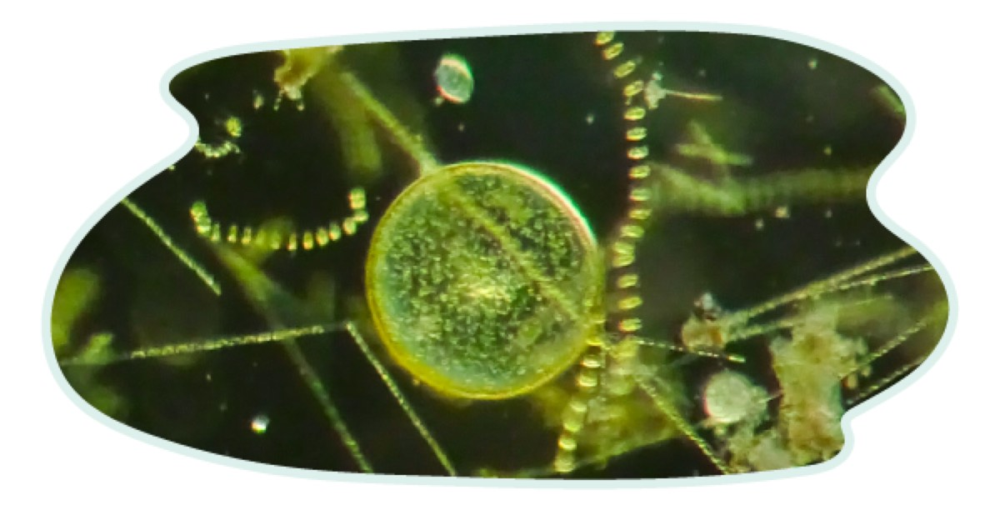
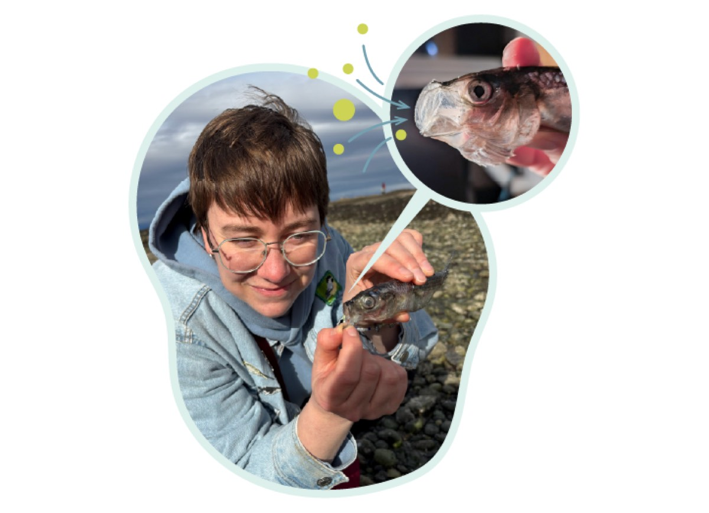
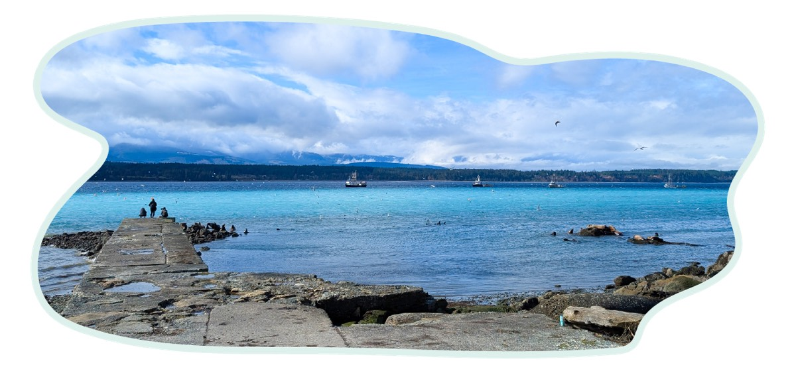
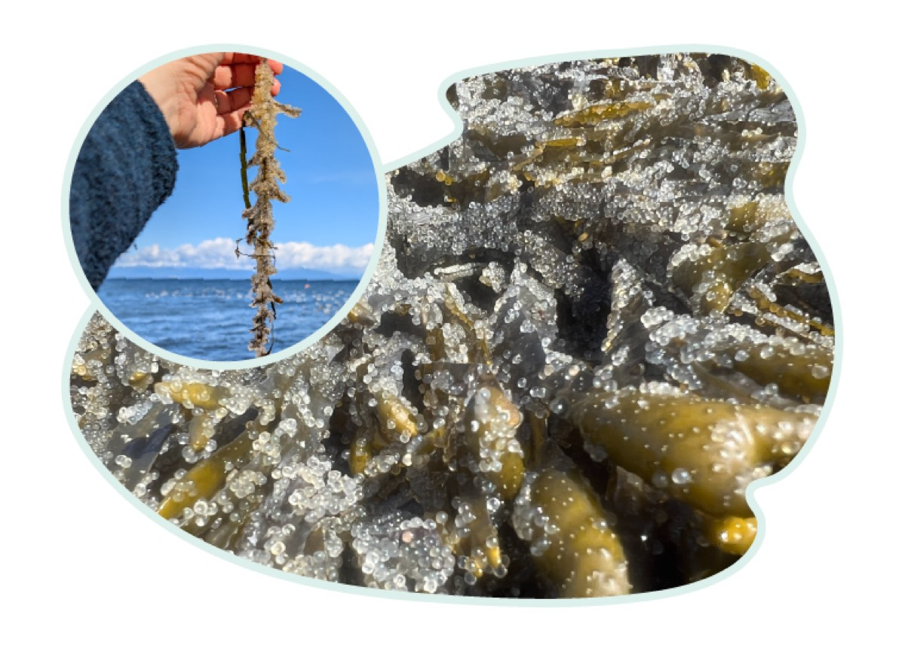
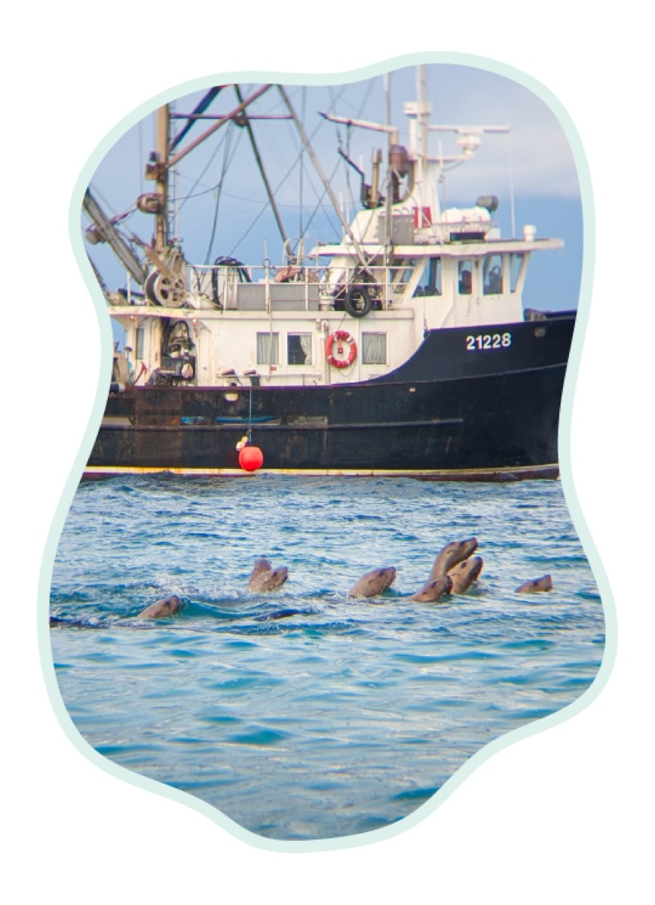

Alors que l'emprise de l'hiver commence à se relâcher à la mi-mars, les plages et les baies de la côte de la Colombie-Britannique se teintent soudain d'un turquoise éclatant, comme pour annoncer le changement de saison. Ce spectacle est d'une telle ampleur qu'on peut le voir depuis l'espace. Il est éphémère et ne dure que quelques jours à chaque endroit.
Sa source ? Un petit poisson argenté, à peine plus long que votre main : le hareng du Pacifique.
J'ai grandi dans les Prairies, mais j'ai toujours été attirée par la côte, surtout par les endroits qui grouillent de vie, comme les cuvettes de marée, les baies et les estuaires. La portée de ces « lieux de rassemblement » n'est pas seulement écologique : elle peut aussi être sociale, culturelle et économique. Les rythmes du monde naturel se répercutent dans le nôtre.
Participer aux rythmes de la nature ouvre la porte à la connexion. Quand je travaillais comme technicienne des pêches, j'entendais des observations éclairantes sur le comportement des poissons de la part de pêcheurs à la ligne qui étaient régulièrement sur l'eau. Ils avaient le doigt sur le pouls grâce à leur relation quotidienne avec la nature. Dans mon enfance, attraper des grenouilles et des vairons dans les milieux humides de l'Alberta s'est transformé en une fascination de toute une vie pour les créatures aquatiques, qui m'a finalement menée sur l'île de Vancouver. C'est aussi là que j'ai découvert de près les rythmes du hareng.
Le frai du hareng commence par des forces à l'œuvre au plus profond de notre planète. Comme la Terre tourne, les différentes latitudes tournent à des vitesses différentes. Ces écarts de vitesse de rotation génèrent un réseau mondial de courants qui éloignent les eaux de surface des côtes, et les eaux profondes remontent pour les remplacer. C'est ce qu'on appelle la remontée d'eau côtière, qui s'intensifie au printemps sous l'effet de vents plus forts.

Quand ces eaux profondes, froides et riches en nutriments, remontent à la surface ensoleillée, elles déclenchent de vastes proliférations de phytoplancton. Le phytoplancton est formé d'organismes microscopiques photosynthétiques : comme les plantes, ils produisent leur nourriture à partir de la lumière, en convertissant l'énergie solaire en énergie chimique. Le phytoplancton n'est qu'une partie de la communauté planctonique, qui dérive dans les océans du monde aux côtés du zooplancton, de minuscules animaux qui mangent le phytoplancton et se mangent entre eux.
C'est ici qu'entre en scène le hareng du Pacifique. Si la lumière est le carburant et le phytoplancton le moteur, le hareng est la transmission, qui transfère l'énergie à toutes les autres pièces de la voiture. Il assure un lien essentiel entre l'énergie produite dans le monde microscopique et le reste du réseau alimentaire. Ses mâchoires protractiles sont faites pour la succion : elles s'allongent comme une paille pour aspirer le plancton.

Allie avec un hareng trouvé sur la plage, île de Vancouver. Photo : Nirav Parmar
Quand le plancton devient abondant au printemps, les harengs se rassemblent en bancs dans les eaux peu profondes. Ils quittent leur habitat habituel en haute mer pour se préparer à leur frai annuel. Les harengs sont des reproducteurs à ponte libre : quand les conditions sont réunies, les femelles libèrent leurs œufs, les mâles libèrent leur laitance (sperme) et les œufs sont fécondés dans l'eau, ce qui crée des taches de couleur vive le long de la côte.

Les œufs de hareng sont EXTRÊMEMENT collants. Promenez-vous sur le rivage pendant le frai et vous trouverez probablement toutes sortes d'algues, de varech et de végétaux incrustés d'œufs comme de pierreries. Chaque femelle peut porter jusqu'à 20 000 œufs.

Toute cette activité attire l'attention. Tout le monde aime manger du hareng (et ses œufs) : lions de mer, phoques, aigles, goélands, autres poissons et humains. Quand les harengs arrivent en masse, ils arrivent aussi. Les lions de mer se gavent, puis se prélassent sur les rochers en aboyant. Les goélands cendrés cueillent les œufs dans les vagues. Les navires de pêche commerciale parsèment l'horizon, tandis que les pêcheurs récréatifs lancent leurs lignes depuis la rive. Le hareng est une source de nourriture essentielle pour une autre espèce clé, le saumon du Pacifique. Le saumon, à son tour, est la nourriture préférée des épaulards résidents : le frai du hareng est ainsi lié à la survie des plus grands prédateurs du monde, et des plus célébrés.
Historiquement, la surpêche a entraîné l'effondrement de la pêche au hareng dans les années 1960. Celle-ci a rouvert en 1972, après quelques années supérieures à la moyenne qui ont donné un coup de pouce à la population. Les prises autorisées de hareng font l'objet d'un débat permanent, alimenté par des inquiétudes sur la durabilité de la population.

Les Premières Nations de la côte pratiquent des traditions de récolte durable antérieures aux pêches modernes. Des branches de cèdre et de pruche sont placées dans l'eau avant le frai, puis récoltées couvertes d'œufs : c'est ce qu'on appelle le frai sur branches. Le hareng est aussi récolté à l'aide d'un râteau à hareng, une longue perche de bois munie de pointes à son extrémité, qu'on passe dans l'eau depuis la rive ou depuis un bateau.
Le frai du hareng montre à quel point les écosystèmes et les humains sont liés, un thème fréquent du travail de communication scientifique que nous faisons chez Fuse. Comme bon nombre de nos projets, il nous amène à considérer les différentes dimensions des enjeux de conservation. C'est aussi un bon rappel de l'impact énorme que peut avoir un petit poisson fourrage, et des conséquences profondes de la protection des espèces et des habitats. De la rotation de la Terre aux océans remplis de plancton, jusqu'aux communautés qui vivent sur la côte : nous sommes tous liés.